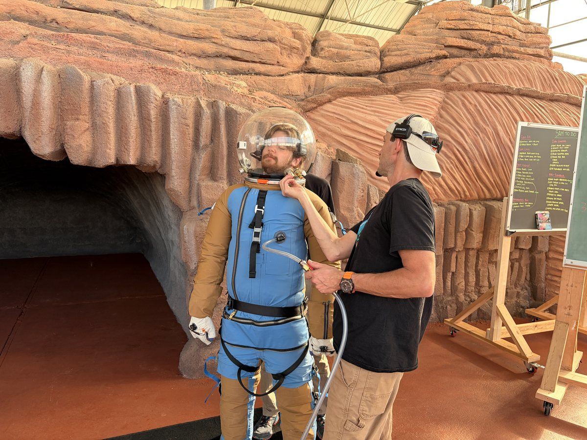
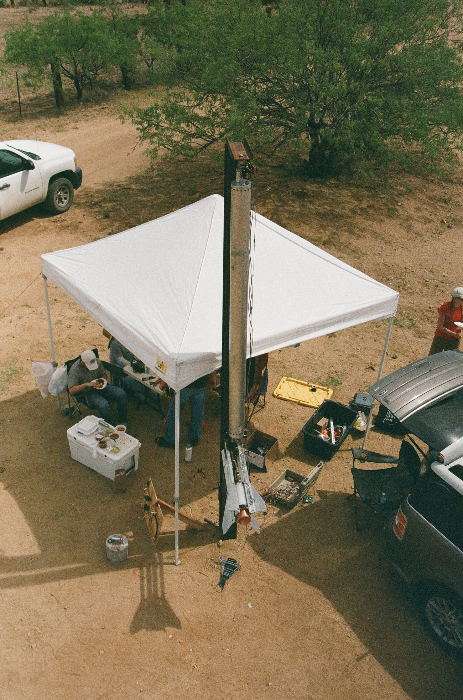
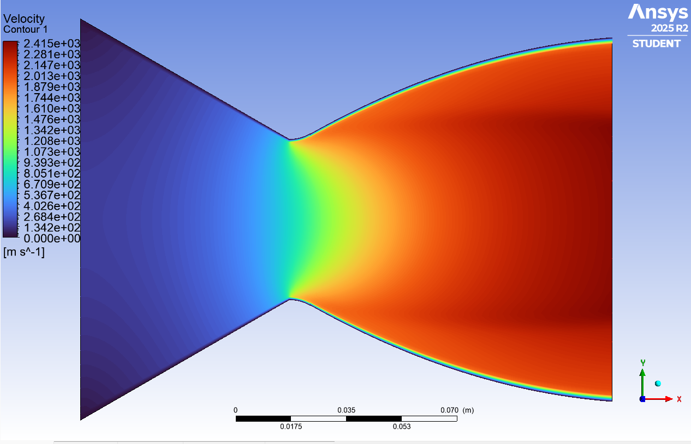
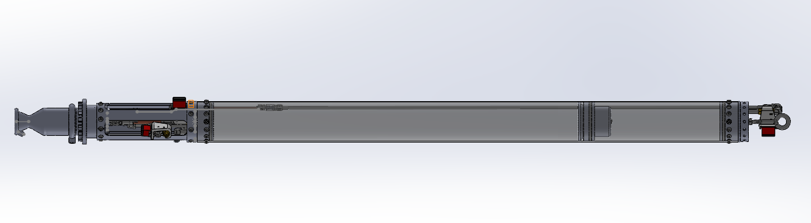
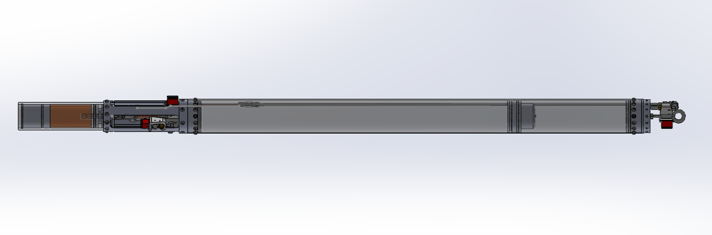
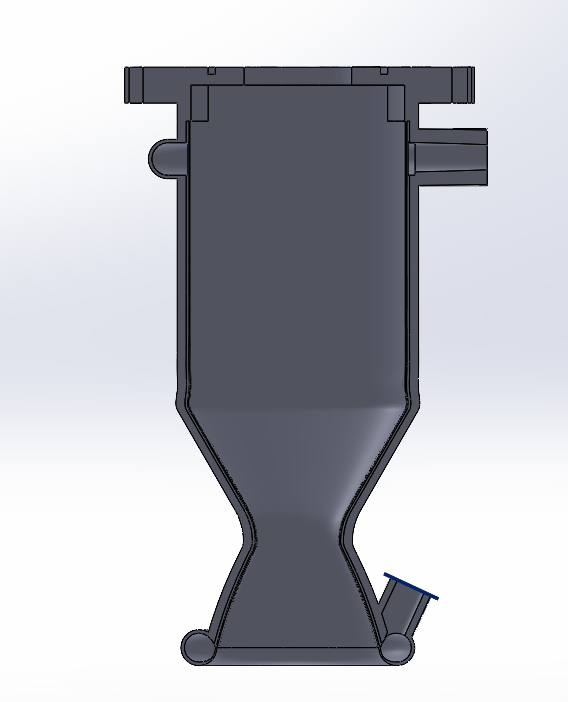
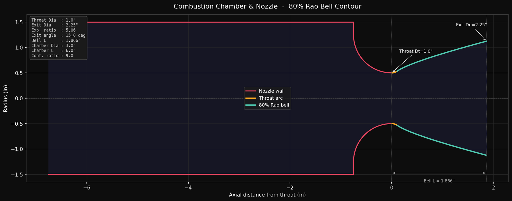
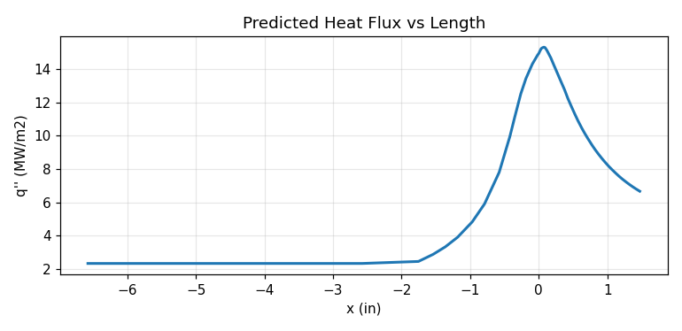
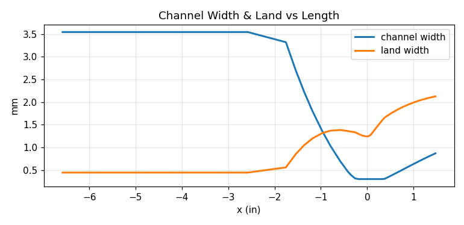
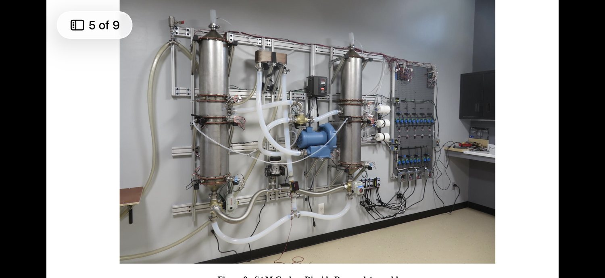

Aerospace Engineering junior at the University of Arizona focused on propulsion, CFD, and test. From compressor aero at Boom Supersonic to liquid rocket engines I lead as Chief Engineer of Wildcat Rocket Engineering.

I'm a rising junior in Aerospace Engineering at the University of Arizona (W.A. Franke Honors College, 3.91 GPA), and a U.S. citizen. My focus is propulsion, CFD, and aero-thermal analysis — but I'm just as at home on a mill, a lathe, or a test stand.
I've optimized compressor aerodynamics at Boom Supersonic and Honeywell, validated solid-rocket-motor hardware at R3 Aerospace, and I lead a student team building liquid rocket engines from scratch. I like the hardest problems in propulsion, and I like shipping real hardware fast.
Tiger-team member resolving a mission-critical low-pressure-compressor stall-margin issue — root-caused high Rotor 1 incidence and ran a DOE across IGV and rotor angles (60–100% corrected speed) to recover positive stall margin. Built an AI-integrated DOE dashboard and an unsteady-CFD pipeline, and redesigned the aft-turbine outlet diffuser to hit a <1.77% pressure-loss target while cutting cost ~50% (sheet metal vs. spin casting).
Designed and validated solid-rocket-motor bulkheads for high-pressure operation, using ANSYS FEA to ensure structural integrity through hydro-proof and static-fire conditions; bridged design and manufacturing to resolve fabrication and tolerance challenges.
Lead propulsion for a student liquid-rocket team — full story in the Rocketry section below.
Analyzed HTF NG compressor performance maps in ANSYS CFX (~0.5% adiabatic-efficiency gain), built a FAST 1D-to-CFX benchmarking capability new to the team (~1% gain toward the 10,000 lbf thrust target), and ran large-scale CFD on Linux HPC with MATLAB tooling that cut post-processing runtime 20%.
Led a 3-person team delivering a CO₂-removal test campaign for Paragon Space Development and ICES; designed and built the AC electrical control system for adsorption/desorption cycling. Co-authored a peer-reviewed ICES 2026 conference paper (see below).
Designed test articles for the updated RS-25 fuel/oxidizer valves (NASA Artemis SLS) in NX with cryogenic protocols; ran actuator testing for NASA Gateway docking hardware in cleanroom thermal-cycle environments; built a C++ controller for EVTOL actuation rigs (adopted by the customer); supported TVC actuator testing under a DoD contract.
Designed trailer-mover hardware in SolidWorks and validated a 200-component assembly in ANSYS Static Structural to mitigate ergonomic injury risk; presented to management (patent pending).
The propulsion system was designed before I joined the team; I contributed extensive fiberglass design and process testing/evaluation, and built the full propellant feed system. Sonoran Wildcat runs nitrous oxide and has been flown on IPA, E98, and even WD-40 — it's the team's development engine for characterizing injector and combustion performance across fuels.
Designed and built the full propellant feed system — plumbing, valves, and pressurization for the N₂O oxidizer.
Led fiberglass design and process testing/evaluation, refining layup, cure, and qualification procedures for the composite structure.
Flown on IPA, E98, and WD-40 across test campaigns — the team's testbed for characterizing injector and combustion performance across fuels.
First place; first team ever to launch a liquid rocket twice in one competition.
As Chief Engineer & Propulsion Manager, I own end-to-end development of a 1,400 lbf nitrous–ethanol liquid engine (named Jeb, an homage to Kerbal Space Program) — design, manufacturing, a custom test stand, and cold-flow / static-fire campaigns.
When a hard start failed the engine's first hot-fire, I led the investigation — ran injector CFD in ANSYS to find the combustion-instability driver, then designed a new injector and refurbished the engine to resolve it.
Led CFD/FEA nozzle trade studies with NASA CEA and ANSYS Transient Thermal, quantifying wall heat flux to size wall thickness and select a copper nozzle.
Spearheaded qualification for competition eligibility — hydrostatic proofs to 1500 psi and cold-flow tests characterizing electronic-dump and injector behavior.
Trained the team in ANSYS, CAD, and machining; secured ANSYS, SendCutSend, and Boltline/Stoke sponsorships; ran logistics and BOM tracking in Boltline.


A ground-up, fully student-designed N₂O/E98 liquid rocket — regeneratively-cooled chamber, pintle injector, and a Rao bell nozzle, all developed with my own analysis and CFD tooling, then machined and flown.


Designed and CFD-modeled the pintle / impinging injector flow field to tune mixing and stability for the N₂O/E98 combination.
Parametric 80% Rao bell contour generated from my own Python + MATLAB tools, then meshed and run in Fluent via an automated pipeline.
Sized cooling channels and quantified wall heat flux to keep the chamber within thermal margin under sustained fire. The nozzle is hot-swappable by design — the regen nozzle is a ground-test article for extended static fires, while a heat-sink nozzle swaps in for competition flights to maximize thrust-to-weight.
Designed a custom poppet valve and feed system, detailed for machining and hydro-tested before integration.





A Python package I wrote to design a Rao bell nozzle from throat/exit/chamber parameters, mesh it, drive a Fluent solve, and post-process — so the whole team can iterate geometry in minutes instead of hours. Powers the Jeb Lite nozzle above.
# Parabolic-approximation Rao bell contour (chamber -> exit) def _rao_contour(r): Rt = r["throat_dia"] / 2.0 Re = r["exit_dia"] / 2.0 th_n, th_e = radians(r["theta_n"]), radians(r["theta_e"]) Rn = 0.382 * Rt # throat downstream arc # inflection point + parabola coefficients x_Ni = Rn * sin(th_n) r_Ni = Rt + Rn * (1 - cos(th_n)) m1, m2 = tan(th_n), tan(th_e) L_par = 2 * (Re - r_Ni) / (m1 + m2) a = (m2 - m1) / (2 * L_par) b = m1 - 2 * a * x_Ni c = r_Ni - a*x_Ni**2 - b*x_Ni return sample_sections(a, b, c, ...)
geometry → mesh → Fluent journal → post-processing pipeline for rocket nozzles.
MATLAB method-of-characteristics nozzle design plus altitude & performance tools.
Full engine & rocket CAD, pintle injector, poppet valve, nozzle molds, structural FEA.
Two-time winner of the Honeywell Aerospace AM design contest.
First place with Sonoran Wildcat — first team ever to launch a liquid rocket twice in one competition.
Recognized for engineering innovation at the world championship.
Trailer-mover ergonomic-safety mechanism (U-Haul).
3.91 GPA, Aerospace Engineering, University of Arizona.
Co-author on an ICES 2026 peer-reviewed conference paper.
Open to Summer 2027 propulsion, CFD, and test engineering internships. U.S. citizen.